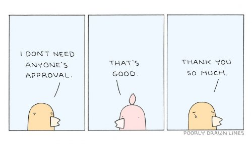

Whatever the image of yourself, it’s a mask and it’s hiding emptiness.”
--Adyashanti
----------
“It's all make believe, isn't it?”
--Marilyn Monroe
----------
“We were born naked. The rest is drag.”
--Ru Paul
Some years ago at a dance I was talking with some friends and a man came up to ask one of us to dance. She turned him down, needing a rest. The man then walked away, ignoring the rest of us. We looked at each other and then someone said, “What are we, invisible?”
Or recently on social media, a woman started a long discussion noting that people get invisible as we age. Hundreds were in agreement, all greatly lamenting being invisible.
Meanwhile this same poster’s website is covered with pictures of herself. No invisibility for her, thank you very much.
Then there was my elderly mom in her nursing home, also trying hard not to be invisible. There she was in her eighties, trying to impress all the aged folks in wheelchairs, making sure they thought she was good-looking and well-dressed and fun at dinner, emphasizing her old successes and life achievements with, ahem, embellishments.
How people saw my mother was very important to her right up to her chosen dying day, when she carefully planned the clothes she’d wear when she was found.
Let’s face it, as long as we’re alive (and maybe even after,) being invisible is bad.
Folks want to be seen.
Dammit, look at me! Look at me being attractive, look at me being smart and knowing things, look at me being cool and unconcerned, look at me being funny, look at me donating “anonymously” and then casually telling people what I did. (“Oh it’s nothing; I just like to help people.”)
Hey let’s take a selfie! And then we’ll post it.
Because, y’know, SEEN.
By others.
But only if it’s a good picture. Only if we show up good looking, smart, successful, a winner. Only if by seeing us, others will have a good image of us, as our best in their eyes, head, and opinion.
Because look out if we can’t make them think the right things about us. Look out if we can’t be sure we’ll perform well in the concert, can’t be sure the boss will be impressed, can’t be sure people will view us positively in some social situation.
Eek. Then we’re scared. Then we're anxious. Then labels show up like social anxiety or performance anxiety or lack of motivation or agoraphobia or introversion or co-dependence.
Yep. One wrong move and being seen is terrible.
Be seen badly by others and hello depression, hello addiction, hello secrets and hiding and never leaving the house.
Invisibility would be absolutely welcome at that point.
So it becomes imperative- as in, not an option- to attempt to control the narrative about us. We must appear to control how we are seen by others or pay a scary price.
Naturally we work incessantly, compulsively, to make that happen. Constantly putting lipstick on the ol’ proverbial pig.
Meanwhile… Seen, looking good, looking bad, appear, invisible. Have you noticed these are all visual words?
They’re all words denoting image.
And what real thing cares so much about image and how it looks, that well into old age it may still be trying to control how the self is presented to others? What real thing wants that so badly?
Not to mention, what real thing has to work so hard to be seen in the first place? Why isn’t it a given? I see a lamp, I see a cat – neither has to bother working to be “seen.” Why does it take so much careful human effort and attention- just to appear in someone else’s eyeballs?
Could it be because there’s nothing more real or substantial available to be?
What we see in the mirror is image; that reflection is not a person. Photos are pictures; they're not a person.
What we call personality, mind or ego is not a person.
Even the body is not a person. It’s meat, animated by who knows what.
But hey, at least the body can be seen. Look, there it is. There I am. Right there.
Perhaps this explains why we so often confuse the body with what we are.
I mean, we can’t see the darn thing ourselves. We'll never see our own face, our own back, our own nose.
We need others for that. And images- images in mirrors, images in pictures.
Something that can reflect us. To prove we exist.
Otherwise there’s no self at all.
We’re an image or we’re nothing.
Self image becomes key to maintaining the illusion- the hologram- we puff up every day. There’s nothing else to back the sense of “me” up.
So yes we do care, and to some degree always will care, what people think about us.
Because we need them to prove us.
So we’ll continue to get mad or depressed or scared when someone doesn’t think we’re wonderful. We’ll continue to try to look good in front of the new honey, to not be seen having something in our teeth, to not miss the easy shots on the golf course or have a hole in our pants or say the wrong thing at a party.
Because image is the ball and chain that ties us to the sense of individuality, the sense of being a real and solid person.
Giving a crap what some other thinks about us is part of that tether.
Being seen makes us feel like some thing. It's all we've got.
Even though an image will always be no thing.
Still, that just might be something
worth seeing.
Click here to get your Mind-Tickled every week.
"It sees itself. The reflection in the mirror is only made of mirror."
--Rupert Spira
----------
“Without you, I am nothing at all.”
--Michael Markham
----------
“If a mirror ever makes you sad, you should know that it doesn't know you."
--Kabir
